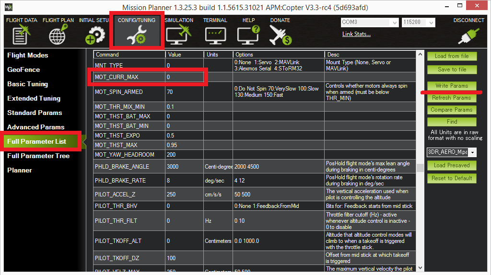
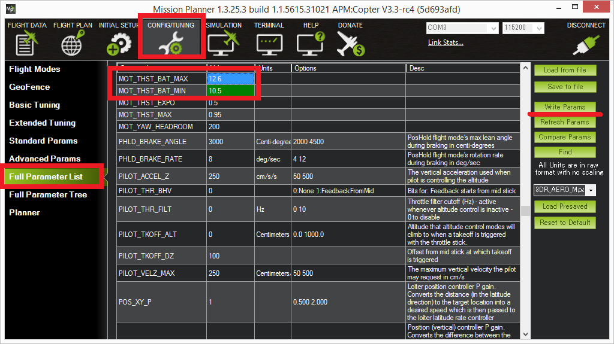

Current Limiting and Voltage Scaling¶
Copter includes current limiting in order to protect the battery from damage and voltage scaling to compensate for the voltage drop as the battery is depleted. Both of these features require the vehicle to have a Power Module or other voltage and current monitor.
Note
Current limiting and voltage scaling were introduced in Copter 3.3.
Current Limiting¶
This protection automatically drops the throttle to as low as 60% of full throttle in order to limit the current requested from the battery. This can be useful to protect the battery from damage.
To enable the feature, set the MOT_BAT_CURR_MAX parameter to the desired limit in amps (or “0” to disable this feature).
{kind=link}
If the measured current exceeds this limit the maximum throttle will be reduced to a safe level in 1 to 5 seconds (depending upon how far over the limit it is). Because the limit can be exceeded for short periods of time, the limit should be set somewhere between the battery’s burst limit and its absolute upper limit.
Voltage scaling¶
If enabled, this feature will increase the roll, pitch and yaw control gains to compensate for the voltage drop as a battery is depleted. This is helpful in that it helps ensure the vehicle’s attitude controls do not degrade as the battery weakens.
To enable set the MOT_BAT_VOLT_MAX to the battery’s full charge voltage (i.e. 12.6 for a 3S battery). Gains will be scaled to attempt to maintain the attitude control response seen at full charge.
Set MOT_BAT_VOLT_MIN to the minimum battery voltage the vehicle would normally experience. The gains will not be scaled up any more as the voltage falls below this level. Setting this to the battery failsafe voltage is a good start.
{kind=link}